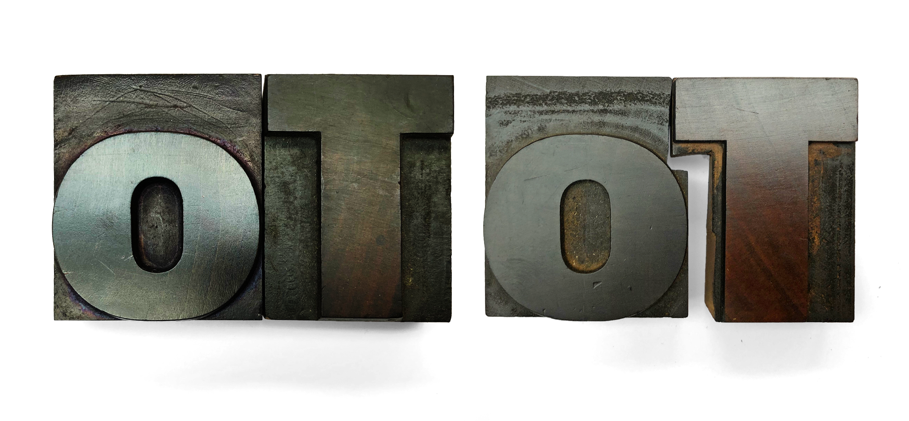

Fonts 2019
Irgendwas ist ja immer…
Schule für Gestaltung, Zürich – 2019
Stefan Huber – Entwickler & Dozent
Impresions
- Polo – Meist unterschätzte schrift – Mengentext
- Lexicon – Beste Schrift ever
- Thesis – erste perfekte Corporate schrift
Web · Fonts · 2019
✨ Qualität ✨
Kerning · Tracking

Bildquelle: Stefan Huber · 2018
Kerning mit Sägeblatt
Bildquelle: Stefan Huber · 2018
Kerning-Klassen seit OT
Darstellung von Klassen-Kerning in OT
Tracking mit CSS
Grössenabhängig von Format verschiedene Trackings.
Crazy variable fonts für perfektes typesetting
Versalsatz
Darstellung von Ausgeglichenen Versalien. Testwort: Typo WELT
Mikrotypografie
Nein! Wenn mein font nicht leistet = schlechter font
Darstellung: Ausrufezeichen nach Wort
Mein Kunde erfasst den Text – ich mach das regelwerk
Grössenabhängige Darstellung – optische Grösse
Grafik Verhältnis zwischen – Engeneering zu Technik
Ausgabe – Auflösung
– Darstellung von S/W-Font screen & print – Darstellung von farbigem font screen & print 4f/2f
Wir haben kein Qualitätsproblem Qualität so gut wie nie!
Zeichen
Sprachabdeckung
- Noto
- Globalfonts
- Unicode >> georgisch
lokalisierte formen sind in den fonts drin!
Mirkotypo
Multiplikation (Apple) – reduzierter wortabstand – Problem mit safari
Schriften update
Spaces
Zeichenersetzung 100 km → 100 km :emoji: >>> https://logical.family/

Lizenz
Beste fonst gratis
Verschleiss von schriften >>> Lizenzen, die ablaufen
chrome fehler – arabisch
Abstract
Im Talk werden in schnellen Schritten gezeigt, wo wir heute mit Fonts im Web stehen und wie Technologie und Design stark in einandergreifen müssen um gute Typografie zu erreichen. Dafür werden einige Aspekte gezeigt, die bereits erreicht wurden und was noch entwickelt werden muss.
Ist
- Qualität – Technische und die gestaltereische Qualitäten der Schrift und der Schriftausgabe
- Zeichen – Welche Zeichen setzen wir und wo ist Schrift die Technik für andere Ideen
- Lizenz – Was passt und wem passt es nicht
- Standards – Wer will denn heute noch Standards?
Ausblick
- Varriable Fonts – Parametrisches Design für den Endanwender
- OpenType 2.0?
Dozierende
- Berufsleute mit Lehrauftrag
- Spezialisten vor Generalisten
- Diversität durch Vielfallt
Warum?
Das Physische Medium wird überflüssig

Börsentelegrafen, Thomas Edison, 1869
Information reist schneller als ein Medium
Informationsübertragung nach London in km/h

A Farewell to Alms – A Brief Economic History of the World,
Gregory Clark, Princeton University Press, 2007
Fragestellungen
Wie unterstützt eine Gestaltung den User im digitalen Medium?
Grundsatz – Inhalt steht im Zentrum
Erste Website – Tim Berners-Lee, 1991
Gestaltung & Technologie folgen Inhalt

Book Reader – Everyday Science and Mechanics, April, 1935 – Mikrofilm ab 1859
Mobile Technologie
Steve Ballmer – Reaktion auf iPhone von CEO Microsoft – 2007
Tradition

Fremdbild

Selbstbild

Selbstbild

IAD in Zürich
- Der Inhalt steht im Zentrum
- Typografie und Struktur sind zentrale Themen
- Die Gestaltung und Technologie soll den User unterstützen
- Fokus auf Gestaltung mit Webtechnologie
Beispiel – HF IAD, 2017
Beispiel – HF IAD, 2017
Laotse
Lernen ist wie Rudern gegen den Strom. Hört man damit auf, treibt man zurück.
Profil nach der Ausbildung
- Digitale Strategien erarbeiten
- Inhalt und Design für digitale Medien verknüpfen
- Planung und Kontrolle eines Produktionsteams
- Produktion erfordert zusätzliche Techniker
Lohn
Facts & Figures
- 6 Semester berufsbegleitend
August 2019 bis Juli 2022 - Laptop erforderlich
- Ausbildungskosten & Arbeitslast
Voraussetzungen
Lehrabschluss EFZ in
gestalterischem Beruf
Grafik, Polydesign 3D, Polygrafie, Mediamatik, Fotografie, Gestaltung Werbetechnik ...
Voraussetzungen
Lehrabschluss EFZ in
einem anderen Beruf
Und mindestens eine zweijährige Berufspraxis im gestalterischen/technischen Bereich.
Voraussetzungen
Maturitäts- bzw. Mittelschulabschluss
Und mindestens eine zweijährige Berufspraxis im gestalterischen/technischen Bereich.
Aufnahmeverfahren
- Anmeldedokumentation mit Portfolio
- Hausaufgabe
- Aufnahmegespräch
(Präsentation Hausaufgabe sowie Eignungsgespräch)
Lehrgang 2019
- Anmeldeschluss – 15. März 2019
- Start – 23. August 2019
Präsenzunterricht
- Unterricht am Freitag und Samstag
- Präsenzpflicht 80%
- persönlicher Laptop
- Adobe CC
wird seitens Schule zur Verfügung gestellt
Berufspraxis
Arbeitstätigkeit von mindestens 50% im jeweiligen Berufsfeld (Nachweispflicht)
Selbststudium
- wöchentlich ein bis zwei Tage Selbststudium
Eidgenössischer Abschluss
Qualifikationsvorgaben
- 1700 Lernstunden Präsenzunterricht (Präsenzpflicht 80%)
- 1900 Lernstunden Berufspraxis (Arbeitstätigkeit 50%)
- Selbststudium/Eigenregie
Eidgenössischer Abschluss
Diplomprüfungen
- schriftliche Arbeit im Laufe des Bildungsgangs (Thesis)
- praktische, gestalterische/technische Arbeit im 6. Semester
Eidgenössischer Abschluss
Dipl. Gestalterin/dipl. Gestalter
HF Fachrichtung Kommunikationsdesign
Vertiefung Interaction Design
Kosten
Aufnahmeverfahren
CHF 200.–
Studiengebühr 1. bis 6. Semester
pro Semester CHF 2600.–
Wohnkanton finanziert gemäss HFSV zusätzlich CHF 2500.– pro Semester
Weitere Kosten
persönliches Arbeitsmaterial, Anfahrt zu Ausstellungen u.Ä. Kosten
Themen
- Kontextwissen (200 Lektionen)
- Konzeption/Crossmedia (324 Lektionen)
- Design (264 Lektionen)
- Interaktion (280 Lektionen)
- Technologie (320 Lektionen)
- Management und Controlling (144 Lektionen)
- Thesis & Diplom
Lab

Kontextwissen
- Medien-/Technologiegeschichte
- Kommunikationslehre/Medientheorie
- Copyright, Lizenzen & Recht
- Marktumfeld/Marktanalyse
Konzeption/Crossmedia
- Konzeption
- Dramaturgie/Narration
- Recherche
- Crossmedia
Design
- Typografie und Design
- Branding/Corporate Design
- Leseführung
Interaktion
- Prototyping/Storyboard
- Interaction Design
- User Interface
- User Experience/Usability
- Interaktives Umfeld
Technologie
- Grundlagen und Code
- Typografie und Technik
- Devices
- Suchmaschine & Statistiken
Management & Controlling
- Agiles Arbeiten
- Resourcenplanung
- Kostenplanung
- Präsentation/Argumentation
Stundenplan
Milestones im Lehrgang
- Prüfung nach 1. Semester
- Thesis im 5. Semester
- Diplom im 6. Semester
Beispiele
Experimentelles Erzählen & LAB
HF IAD, 2017
Meetup – Web‑Worknights